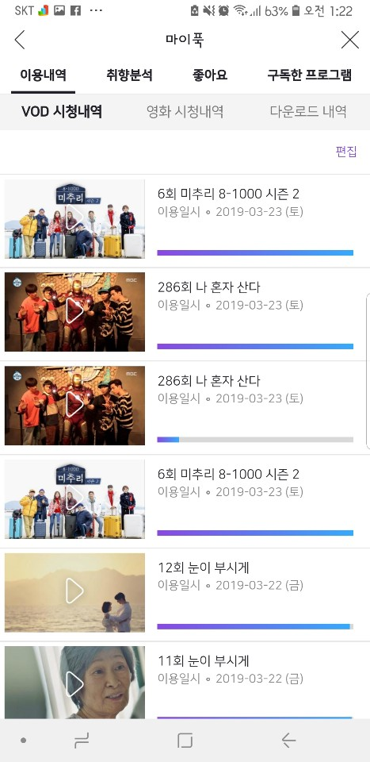
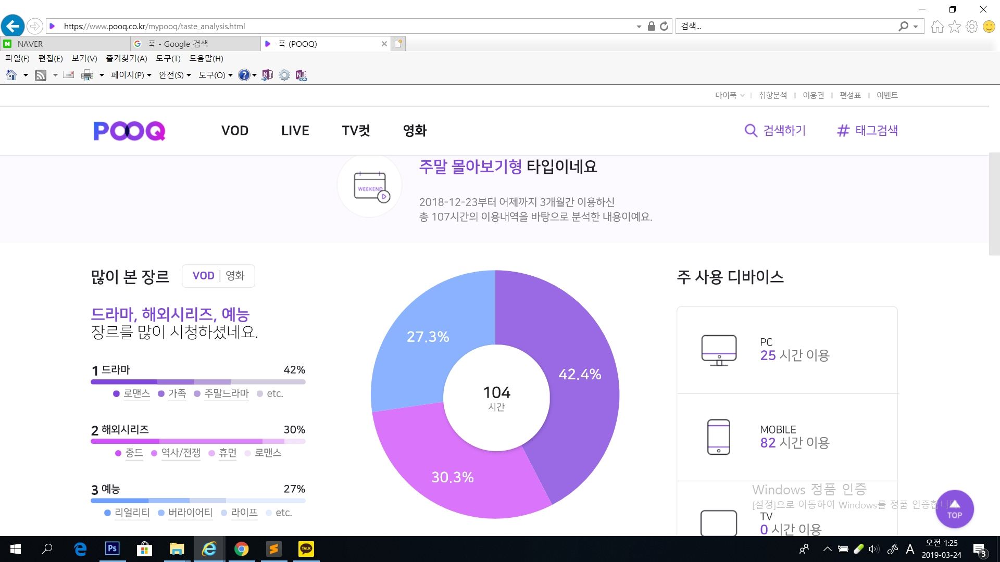

상품 설명
집에서 나가기 싫은 당신을 위한 맞춤 상품, 침대 위에서 24시간 동안 지겹지 않도록 지상파, 케이블에서 총 80개의 채널에서 예능, 다큐멘터리, 드라마를 본 방송 5분 이후부터 거의 동시에 볼 수 있는 다시 보기 서비스와 거기서 끝나지 않고 텔레비전의 절친인 50cm의 큰 사이즈의 팝콘! 팝콘 먹고 더러워진 손을 닦을 물티슈까지 준비된 완벽한 이불 밖이 싫은 그대들을 위한 완벽한 세트!
집에서 나가기 싫은 당신을 위한 맞춤 상품, 침대 위에서 24시간 동안 지겹지 않도록 지상파, 케이블에서 총 80개의 채널에서 예능, 다큐멘터리, 드라마를 본 방송 5분 이후부터 거의 동시에 볼 수 있는 다시 보기 서비스와 거기서 끝나지 않고 텔레비전의 절친인 50cm의 큰 사이즈의 팝콘! 팝콘 먹고 더러워진 손을 닦을 물티슈까지 준비된 완벽한 이불 밖이 싫은 그대들을 위한 완벽한 세트!
푹은 평소에도 자주 쓰는 거라서 크게 다른 느낌은 없었다. 빠른 업로드가 가장 큰 장점이고 PC와 모바일 둘 다 가능하다는 점을 좋아해서 푹을 애용한다. 사진 리뷰는 내가 평소 푹을 사용하면서 좋았던 점들을 위주로 화면을 캡처해봤다.
홈 화면에서부터 시작한 지 몇 분 안 된 프로그램들 다시 보기가 바로 뜨고 밑에는 내가 시청 중이던 콘텐츠 이력이 굉장히 많이 뜬다는 점이 좋았다. 한꺼번에 여러 프로그램을 번갈아 가면서 봐도 이어보기 서비스가 잘 되어있어서 보고 싶은 프로그램을 쉽게 선택할 수 있다.(티빙도 이어보기 시스템이 있는데 거기는 이어보기가 계속 바뀌지 않고 오래전에 봤던 부분들이 뜨는 경우가 많은데 푹은 이어보기 서비스가 잘 되어있어 내가 전에 본 바로 그 장면으로 갈 수 있다.)
푹은 취향 분석 서비스가 정말 잘 되어있다. 내가 평소에 어떤 스타일로 이용을 했는지가 쓰여있고 '주말 몰아보기형'이라는 나의 성향을 알려주고 시청 기록들을 분석하여 좋아하는 장르랑 가장 많이 본 연예인 등을 쉽게 알 수 있다. 장르도 굉장히 세분화 시켜서 예능은 버라이어티를 좋아하는지 리얼리티를 좋아하는지 쉽게 알 수 있다.
영상을 시청할 경우에는 그 영상의 정보가 쓰여있어서 출연진이나 총 방영 시간, 회차 내용을 쉽게 접할 수 있다. 또한 밑에는 최근에 가장 인기 있는 프로그램이나 이 영상을 시청하던 다른 이용자들이 주로 시청하는 프로그램에 대한 정보를 제시해줘서 다음에 어떤 프로그램을 볼지 많은 참고가 되었다.
팝콘을 처음 받았을 때 생각보다 큰 사이즈에 놀랐다. 50cm라는 기본 정보를 생각해보면 당연한 사이즈인데도 놀랐다.


싸게 판매하는 거라서 맛에 큰 기대를 하지 않았는데 짭조름하게 맛이 있고(단 맛은 없었다.) 몇 개는 맛이 있고 다른 것들은 없는 허접한 맛일 줄 알았는데 양념이 골고루 섞여 있어서 아주 좋았다.

가장 걱정스러웠던 것은 눅눅할 까봐였는데 열 때 밀봉이 잘 되어있어서(이걸 못 찍은 게 아깝다.) 전혀 눅눅하지 않았다. 전체적으로 기대했던 것 이상이라 실제로 폭으로 나 혼자 산다를 보면서 열심히 먹었다.

처음 받았을 때 느낌은 '무거웠다'였다. 100매라는 사이즈가 내가 생각했던 것보다 양이 많은 물티슈였고 두꺼워서 물티슈 택배가 아닐 줄 알았다. 디자인을 깔끔하게 되어있어서 청결하다는 느낌이 들었다.


계속해서 물티슈를 사용해봤는데 더 좋은지는 잘 모르겠지만 쓸 만은 한 것 같다. 근데 막 산 제품이라 그런지 물기가 많은 편이라고 생각했다.


 리뷰 용으로 찍은 사진이기 때문에 이걸 찍을 때는 별 느낌 안 들었지만 찍고 나서 먹으면서 푹을 시청할 때에 정말 즐거웠다. 다시 촬영할 수도 있어서 되도록 안 먹으려던 팝콘에게 계속 손이 가면서 여기가 천국이구나 싶었다. 게다가 먹고 나서 다른 프로그램을 보려고 핸드폰이나 컴퓨터를 만지기 전에 물티슈로 손을 닦고 하면 된다는 것이 항상 뭘 먹고 만질 때 조심하거나 손을 씻으러 갔는데 너무 편리한 것 같다. 사용해보니까 내가 생각했던 것보다 이거 너무 좋은 패키지인 것 같다.
리뷰 용으로 찍은 사진이기 때문에 이걸 찍을 때는 별 느낌 안 들었지만 찍고 나서 먹으면서 푹을 시청할 때에 정말 즐거웠다. 다시 촬영할 수도 있어서 되도록 안 먹으려던 팝콘에게 계속 손이 가면서 여기가 천국이구나 싶었다. 게다가 먹고 나서 다른 프로그램을 보려고 핸드폰이나 컴퓨터를 만지기 전에 물티슈로 손을 닦고 하면 된다는 것이 항상 뭘 먹고 만질 때 조심하거나 손을 씻으러 갔는데 너무 편리한 것 같다. 사용해보니까 내가 생각했던 것보다 이거 너무 좋은 패키지인 것 같다.